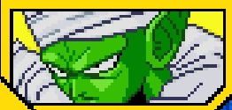
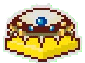

Vegeta attaque la Terre, Krilin et les terriens sont prêts à l'affronter, en apprenant la technique du Kienzan. il ne restait que Gohan et Krilin en vie face au prince des Saiyans. Goku arriva avec une nouvelle technique le Kaioken mais même avec ça Vegeta est trop fort. C'est alors que Goku a une idée, il compte utiliser une technique appelée Genkidama qui peut battre Vegeta, épuisé malgré tout, Gohan et Krilin ont la tâche désormais de retenir Vegeta le temps que Goku charge son Genkidama. Après quelques temps d'attente, Goku lance le Genkidama sur Vegeta, mais atterit sur Gohan et il le renvoit en l'air, Goku donna le reste à Krilin, ce dernier étant prêt à l'envoyer sur Vegeta, ce dernier n'ayant pas pu éviter, se fit terrasser et dût fuir dans sa capsule de secours. Afin de réssuciter Piccolo et les autres, Krilin emmène Gohan sur Namek.
Débloque l'Attaque Ultime "Ryuusekikoudan".


Sur le chemin de la planète Namek, Gohan et Krilin font des entraînements virtuels en attendant qu'ils soient à destination. Après ce petit combat, les deux guerriers se rendent compte des progrès de l'un et de l'autre et envisage aussi de faire une technique à deux, jusqu'à que Bulma leur rappelle de nettoyer les dégâts de l'entrainement
Débloque l'attaque combineée avec Gohan "Libération d'énergie".
En arrivant sur la planète Namek, nos deux héros doivent affronter Vegeta et Freezer dans une grande chasse aux Dragon Balls ce qui en résultera du sort de la planète Namek et de l'Univers, alors que Vegeta fit alliance avec les héros pour combattre Freezer, l'empereur voyant que les terriens n'étaient pas encore morts, dût appelé les Forces Spéciales de Ginyu. Alors que les guerriers allaient affronter l'élite de Freezer Goku arriva détruisit quasiment tout le commando, mais tomba dans le piège de Ginyu et il se fit volé son corps. Ginyu confiant en son nouveau corps affronta Krilin et Gohan pensant qu'il a 180 000 unités de puissance. Après un combat assez violent, Ginyu se rendit compte que sa puissance n'était pas aussi haute que Goku car il ne maîtrisait pas ce corps. Etant aux portes de la mort, Ginyu voulu échanger de corps avec Vegeta, mais Goku s'interposa et put récupérer son corps
Débloque la compétence "Vrai potentiel"


Grâce au fait qu'il a vaincu les Forces Spéciales et qu'il a récupéré les Dragon Balls, Krilin a pu ramener à la vie Piccolo, ce qui ne plait ni à Vegeta ni à Freezer qui commence à attaquer les héros. Soudainement Vegeta eut l'idée de se mettre à 3 sur Freezer, le tyran enragé par cette annonce tordue, va montrer à nos héros son vrai pouvoir. C'est ainsi que Krilin, Piccolo et Vegeta se battent contre Freezer pour l'arrêter. Alors que le combat semblait bien aller, Freezer montre au trio sa véritable puissance, celle lorsqu'il est à fond, il terrasse Vegeta et écrase à nouveau Krilin, mais au climax de tout ceci Goku devient Super Saiyan et bat Freezer. La paix est de retour et Krilin et Vegeta sont réanimés grâce aux Dragon Balls.


Après la défaite de Freezer de l'épée de Trunks, qui annonce l'arrivée des cyborgs et leur menace. 3 ans après cette annonce, Vegeta et Piccolo partent affronter les cyborgs, mais derrière tout ça il y a une autre ombre menaçant tout cela: Cell, qui est bien décidé à absorbé C17 et C18 pour devenir parfait, afin de contrer Cell, Bulma créer une télécommande pouvant désactiver les cyborgs C17 et C18. Krilin ayant eu un faible pour le cyborg après une intéraction avec elle, hésité à l'anéantir, il ne sait pas s'il doit fuir ou l'anéantir.


Alors que Goku et Gohan s'entraînaient dans la Salle de l'Esprit et du Temps, Ginyu voulant faire revivre ses alliés se rendit sur Terre pour trouver les Dragon Balls grâce à son infiltration, quand soudain Krilin, Trunks, Yamcha et Ten Shin Han le trouva et l'affronta, Ginyu les affronta, mais perdit, contraint par le fait que son plan tomba à l'eau car les Terriens étaient trop puissants, il prit la fuite, mais Krilin et les autres le poursuivit, sans Trunks qui alla dans la Salle de l'Esprit et du Temps pour devenir plus forts que les cyborgs.
Débloque Yamcha / Ten Shin Han comme personnage support.

Battre C-18 avant la fin du chrono .


Après avoir vaincu le Commando Ginyu, Krilin et les guerriers de la Terre poursuivirent Ginyu jusque dans les terres de glace où un combat long fut entamé, les terriens ont réussi en combinant leurs attaques et les forces de Ginyu furent vaincues, au final les guerriers terriens ont pu prouvés que la Terre était en sécurité même en l'absence des Saiyans ou de Piccolo. Grâce à eux, Goku et Trunks ont pu avoir un entrainement tranquille pour défaire les cyborgs.
Débloque l'Attaque combinée "Guerriers terriens" avec Yamcha / Ten Shin Han.
Terminer le combat contre C-18 .

Après la destruction de C18, Cell ne pouvant atteindre sa forme parfaite, disparait et laisse la Terre en paix, mais laissant Krilin rongé par les remords. Ne pouvant se résoudre à cet état de fait, il décide de rassembler les Dragon Balls pour la réssuciter, il réussit à les rassembler, mais la dernière boule de cristal était au palais du Tout-Puissant, là bas il rencontra Piccolo qui savait ce qui se tramait. Krilin lui demanda d'abord gentillement de la lui remettre, mais Piccolo refusa, alors un combat s'engagea.0 En plein combat, Piccolo remarqua que Krilin se battait sans retenue et malgré son manque d'expérience par rapport à Piccolo, il parvient à récupérer la boule de cristal en battant Piccolo.
Battre C-18 avant la fin du chrono.

A l'aide des Dragon Balls obtenues, suite au combat face à Piccolo., il ramena à la vie C18, ce qui n'avait pas échappé à Cell, ayant prévu que Krilin allait la réanimer, c'est alors qu'un combat se lança pour arrêter Cell. Alors que le combat allait en la faveur de Cell, un Kamehameha de Goku perturba Cell et les deux en profitèrent pour effectuer un Kienzan combiné qui mit fin à Cell et son ambition de devenir parfait. Goku apparut et fut étonné de voir le comportement de son ami, il décida donc de l'aider qu'importe son choix.
Débloque l'attaque combinée avec C18 "Double-Kienzan".
Terminer le combat contre C-18.


A la fin du combat, Krilin décida de détruire la télécommande, en laissant la chance à C18 de s'enfuir, mais malheuresement Vegeta aveugler par son orgueil, aida Cell a abosrbé C18 et obtenir son corps parfait. Cell ayant son corps parfait est imbattable, ni Vegeta, ni Trunks ne pouvait faire quoi que ce soit, n'ayant plus de choix pour se racheter Krilin décide d'aider Trunks ayant son nouveau pouvoir, pour battre Cell Parfait. Après une lutte acharnée pour ne pas mourir, Cell n'a reçu aucun dégat et se moqua des deux guerriers et organisa un tournoi d'où l'issue fut déjà évoqué: la défaite de Cell et le mort de Goku. Mais C18 fut ramenée à la vie grâce aux Dragon Balls.
Débloque l’attaque combinée avec Vegeta (Super Saiyan) nommée "Super épée Bagit".

Terminer le combat contre C-18.